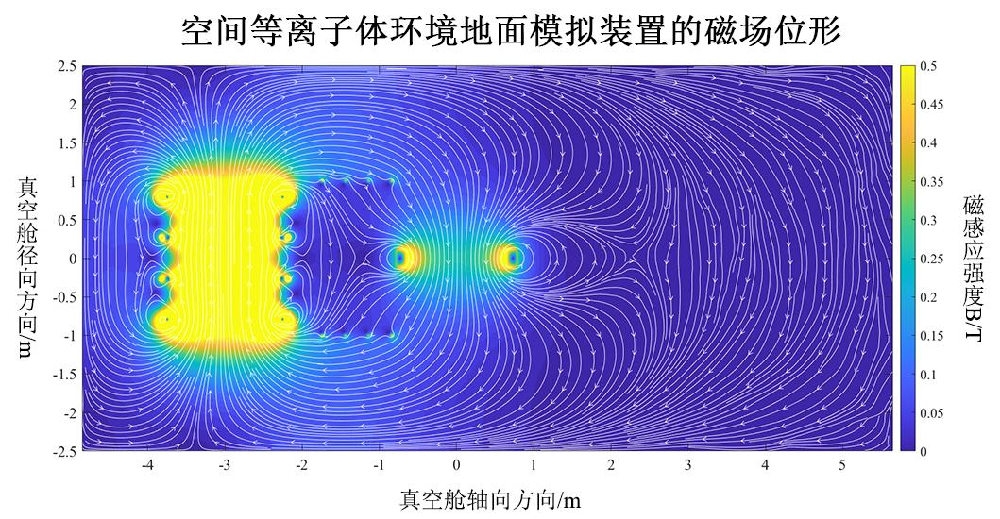
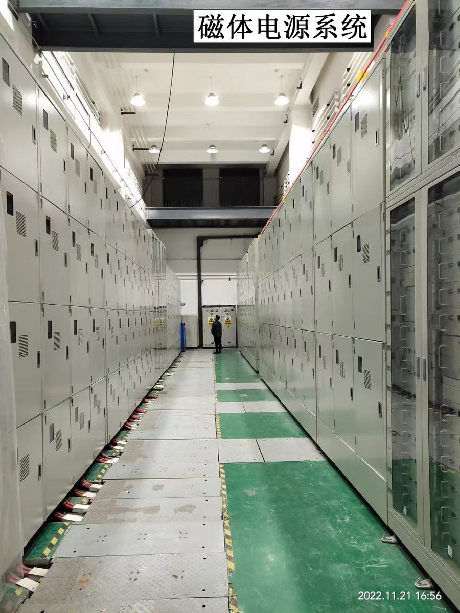

三维地球磁层空间等离子体环境地面模拟装置
项目档案
官方档案 · 已核验在太阳风的作用下，地球周围存在一个磁场与等离子体强耦合的结构，被称为地球磁层，它是地球的屏障，也是人类走向外太空的窗口。然而，地球磁层中存在许多爆发性的现象，如磁暴、亚暴和高能粒子暴，它们对航天器、通信系统和电力设施等构成严重威胁。因此，研究空间等离子体环境的演化规律具有重大意义。目前，受制于卫星探测的局限性，人们对地球空间等离子体演化规律的认识还很不充分，直接影响了绝大部分航天器所处的地球磁层空间等离子体环境模型建立、航天器与等离子体相互作用、航天器防护设计和任务规划等一系列重要问题的深入研究。由于在全局测量、可控性、可重复性等方面的优势，实验室模拟已经成为研究空间等离子体的重要手段。目前，虽然国际上存在多个空间等离子体环境的模拟装置，但它们均无法实现地球磁层三维整体结构的模拟。本项目来源于“十二五”国家重大科技基础设施—空间环境地面模拟装置【发改委批复文件参见附件】，国际上首次针对地球磁层三维整体结构模拟，解决了从物理设计到工程技术的诸多难题，取得了如下创新成果：（1）提出了地球磁层三维整体结构的模拟方法，通过一组特殊设计的多自由度磁体线圈组合与脉冲电源系统首次实现了地球磁层三维整体结构的模拟，为开展地球磁层顶三维非对称磁重联、辐射带波—粒相互作用、磁暴等空间关键物理过程的研究提供了必要的支撑条件。（2）解决了极端脉冲电磁力载荷条件下磁体线圈在高真空环境中的支撑、运动、密封和连接问题，实现了多自由度偶极磁场线圈位形、磁层顶位形精确控制等一系列世界首创的独特设计，保障了高真空下线圈组的可靠运行。（3）针对磁体线圈强耦合、参数差异大的特点，提出了脉冲电源的模块化设计方法，并研制了20 kV、3 kA/μs条件下的半导体开关组件，结合5ns的高精度同步控制，实现了电源系统的集成控制和可靠运行，保障了磁体线圈产生磁场的同步以及磁场拓扑结构的快速变化。
本项目授权发明专利20项，发表SCI论文19篇，获批国家重点研发计划常规项目1项。本项目在国际上首次实现了地球磁层三维整体结构的模拟，使我国直接进入了国际空间等离子体环境地面模拟研究领域的前沿，将促进具有我国自主知识产权的地球磁层空间等离子体环境模型建立，推动我国空间基础科学的研究，并支撑航天任务的设计与规划。本项目通过了以时任美国等离子体物理学会主席Stewart Prager为组长的国际专家组评审，专家组认为：“空间等离子体地面模拟装置”的设计是非常巧妙、非常具有创新性、非常独特的，这个新实验装置已处于世界领先水平，将会在国际空间科学领域获得独一无二的重要地位。
设计阐述
官方档案 · 已核验地球磁层是一个磁场与等离子体强关联耦合的环境体系，它既是地球的屏障，又是从地球走向深空的窗口。99%以上的航天器运行在地球磁层空间，但地球磁层的磁-等离子体环境参数瞬息万变，许多爆发性现象，比如磁暴、磁层亚暴、高能粒子暴等不仅对地球空间环境造成灾害性的影响，也是引起航天器故障的主要原因。受制于卫星探测单点、有限时间序列、固定轨道区域、研究周期长、偶然性、难以复现等多方面的因素影响，本项目的设计基于物理参数的相似定标，通过地面装置实验模拟（容易改变参数和边界条件，并实施重复检验）地球磁层空间等离子体环境，可以形象地认为是把地球磁层装进真空罐，从而研究主导空间磁-等离子体环境和空间天气变化的物理过程。
下表列出了本项目装置与国际上同类装置的参数指标、研究功能对比，可以看出：本项目无论是其参数指标，还是其研究功能在全世界都是首屈一指，它在国际上首次实现了跨尺度的三维地球磁层整体结构模拟。
在空间等离子体环境地面模拟装置完成设计之际，召开了“空间等离子体环境地面模拟装置设计国际评审会”，时任黑龙江省副省长胡亚枫、哈尔滨工业大学校长周玉院士参会，《黑龙江日报》对本次会议进行了报道。来自普林斯顿大学、哥伦比亚大学、加州大学洛杉矶分校、伯克利分校、东京大学、北京大学、中国科学技术大学、中科院等离子体物理研究所、地质与地球物理研究所等20多个研究机构的30余位专家参会，对系统的设计、科学目标与研究内容进行了评估。美国物理学会等离子体物理分会主席、普林斯顿等离子体物理国家实验室主任Stewart Prager组长代表专家组对装置的设计给予了高度评价：“空间等离子体地面模拟装置”投入使用后，将会被公认为空间等离子体科学的国际一流实验装置，它提供了比世界上任何其它实验装置更全面的空间等离子体环境模拟实验条件，并且其参数与真实空间参数的物理相关性也会优于以往的模拟实验。【详见附件】
装置完成初步设计后，经过近8年的建设，目前已竣工并投入试运行，成功实现了三维地球磁层空间的地面模拟，并与普林斯顿大学、哥伦比亚大学、东京大学、悉尼大学、加州大学洛杉矶分校、伯克利分校、瑞典空间技术研究院、北京大学、中国科学技术大学、中科院等离子体物理研究所、地质与地球物理研究所等20多个国内外顶尖研究机构签署了用户需求协议。装置所涉及到的关键技术和创新点主要有：
（1）提出了使用四个磁通量线圈模拟行星际磁场与太阳风的方法，每个磁通量线圈由极向场线圈和环向场线圈组成，极向场线圈产生模拟行星际磁场，环向场线圈在线圈电流快速爬升的过程中激发等离子体，产生的等离子体在极向磁场磁压的作用下被迅速推开，从而实现高速太阳风等离子体流的模拟。
（2）提出了模拟三维地球磁场拓扑结构的方法，采用一个圆环形的线圈模拟地球偶极磁场，其与四个磁通量线圈产生的模拟行星际磁场组合，可形成类似地球磁层顶的三维磁场拓扑结构，进而为研究地球磁层顶三维非对称磁重联提供实验条件。
（3）提出了使用四个直线段的线圈产生的磁场调节模拟地球磁层顶的磁场位形，以实现地球磁层极尖区磁场拓扑结构的模拟。
（4）提出了在偶极磁场线圈的外侧增加一个圆环形线圈来模拟地球磁暴期间的地球磁场扰动，通过调控线圈脉冲电流的上升时间来调控磁场扰动的时间尺度，从而为研究地球磁暴期间内磁层对地球磁场扰动的响应问题提供技术支撑。
（5）提出了模拟地球磁尾磁场的方法，使用两个椭圆形的线圈产生的磁镜场来模拟地球磁尾偶极化锋面结构，结合偶极磁场线圈模拟的磁场结构，可构建与地球磁尾磁重联相关的磁场位形。
（1）提出了在磁场拓扑结构、特征时间和能量利用效率等参数约束下的磁体平衡优化设计方法，完成了三维磁层模拟磁体线圈本体的设计。
（2）考虑多场耦合强脉冲电磁力的极端载荷作用，设计了轻量化、可靠性高、安全性高的自适应多位姿支撑运动机构，解决了脉冲电磁力最高达70吨以上的冲击问题。
（3）解决了放气率过高影响真空度和等离子体特性的问题，设计了一套基于环氧树脂真空浸渍、铝壳密封、Inconel喷涂等先进技术的工艺，磁体的放气率降低了4个数量级。
（4）提出了高压大电流条件下脉冲磁体的真空穿舱连接方法，解决了穿舱结构的密封、绝缘、水电分离与抗电磁力冲击等关键技术问题，实现了7类共18个磁体线圈在高真空条件下的可靠穿舱。
（1）针对负载系统耦合特性复杂多变导致磁场位形难以精确调控的问题，提出了基于电源模块参数和放电时序组合调节的脉冲磁场调控技术，实现了总储能高达18.3MJ、电流输出能力超过500kA，结合5ns的高精度同步控制，实现了129个电源模块的集成控制和可靠运行，保障了磁体线圈产生磁场的同步以及磁场拓扑结构的快速变化。
（2）提出了一种基于负载系统多路连接方式切换的汇流结构，实现了7类共18个磁体线圈绕组连接方式的任意变换及电流极性反转，丰富了装置可模拟的磁场位形，为地球磁层顶重联、辐射带波粒相互作用、磁暴等关键空间物理过程地面模拟研究提供了重要技术支撑。
（3）提出了大电流回路的浮地设计、固态开关组件状态监测、基于能量沉积分析的系统状态监测方法，解决了运行在20kV、3kA/μs电流爬升条件下的半导体开关组件研究、大电流放电时地电位抬升与耦合、开关器件状态可检可控、需使用大量电压电流探头进行状态监测的难题，提高了系统整体可靠性。
图集
官方档案


设计五维
内容团队人工编目 · 解读非官方评价三维地球磁层等离子体地面模拟装置,世界级大科学装置
科学装置
服务空间科学研究
空间环境模拟能力服务航天/通信产业
空间科学大装置的国之重器